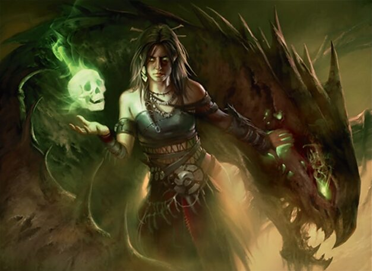
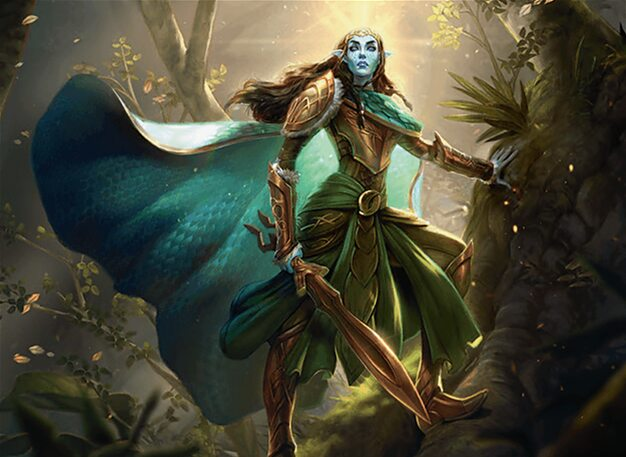
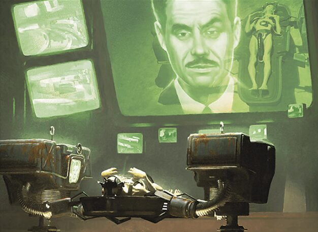
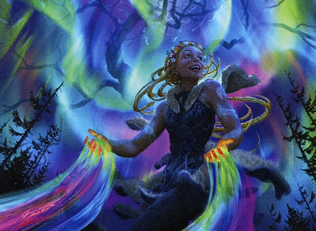
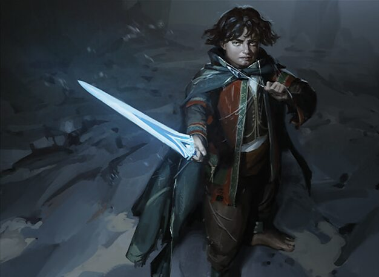

Rangliste bis 1.000 €
Die erfolgreichsten Decks bis 1.000 € in der Forge-Simulation (Bracket 3: höchstens 3 Game Changer).
 Illustration: Eric Deschamps · © Wizards of the Coast
Illustration: Eric Deschamps · © Wizards of the CoastOloro, Ageless Ascetic
 Illustration: Magali Villeneuve · © Wizards of the Coast
Illustration: Magali Villeneuve · © Wizards of the CoastY'shtola, Night's Blessed
 Illustration: Mark Winters · © Wizards of the Coast
Illustration: Mark Winters · © Wizards of the CoastNekusar, the Mindrazer
Rangliste bis 1.000 €
aus 13 Turnieren Sephiroth, Fabled SOLDIER // Sephiroth, One-Winged AngelElo 1605
Sephiroth, Fabled SOLDIER // Sephiroth, One-Winged AngelElo 1605 Valgavoth, Harrower of SoulsElo 1594
Valgavoth, Harrower of SoulsElo 1594 Kuja, Genome Sorcerer // Trance Kuja, Fate DefiedElo 1594
Kuja, Genome Sorcerer // Trance Kuja, Fate DefiedElo 1594 Pantlaza, Sun-FavoredElo 1585
Pantlaza, Sun-FavoredElo 1585 Miirym, Sentinel WyrmElo 1584
Miirym, Sentinel WyrmElo 1584 The Ur-DragonElo 1583
The Ur-DragonElo 1583 Zhulodok, Void GorgerElo 1581
Zhulodok, Void GorgerElo 1581 Ygra, Eater of AllElo 1577
Ygra, Eater of AllElo 1577 Hakbal of the Surging SoulElo 1571
Hakbal of the Surging SoulElo 1571 Ureni of the UnwrittenElo 1563
Ureni of the UnwrittenElo 1563 Ashling, the LimitlessElo 1559
Ashling, the LimitlessElo 1559 Hearthhull, the WorldseedElo 1540
Hearthhull, the WorldseedElo 1540 Arcades, the StrategistElo 1540
Arcades, the StrategistElo 1540 Teysa KarlovElo 1536
Teysa KarlovElo 1536 The Wise MothmanElo 1530
The Wise MothmanElo 1530 Atla Palani, Nest TenderElo 1524
Atla Palani, Nest TenderElo 1524 Felothar the SteadfastElo 1515
Felothar the SteadfastElo 1515 Jodah, the UnifierElo 1505
Jodah, the UnifierElo 1505 Ulalek, Fused AtrocityElo 1500
Ulalek, Fused AtrocityElo 1500 Aragorn, the UniterElo 1497
Aragorn, the UniterElo 1497 Korvold, Fae-Cursed KingElo 1496
Korvold, Fae-Cursed KingElo 1496 Caesar, Legion's EmperorElo 1493
Caesar, Legion's EmperorElo 1493 Hashaton, Scarab's FistElo 1492
Hashaton, Scarab's FistElo 1492
Meren of Clan Nel TothElo 1491 Tidus, Yuna's GuardianElo 1481
Tidus, Yuna's GuardianElo 1481
Lathril, Blade of the ElvesElo 1474 Sauron, the Dark LordElo 1472
Sauron, the Dark LordElo 1472 Vivi OrnitierElo 1468
Vivi OrnitierElo 1468 Yuriko, the Tiger's ShadowElo 1468
Yuriko, the Tiger's ShadowElo 1468
Mr. House, President and CEOElo 1467 Bello, Bard of the BramblesElo 1465
Bello, Bard of the BramblesElo 1465 Isshin, Two Heavens as OneElo 1465
Isshin, Two Heavens as OneElo 1465
Esika, God of the Tree // The Prismatic BridgeElo 1464 Kinnan, Bonder ProdigyElo 1463
Kinnan, Bonder ProdigyElo 1463 The Wandering MinstrelElo 1463
The Wandering MinstrelElo 1463 Zurgo StormrenderElo 1461
Zurgo StormrenderElo 1461 Baylen, the HaymakerElo 1460
Baylen, the HaymakerElo 1460 Rin and Seri, InseparableElo 1460
Rin and Seri, InseparableElo 1460 Animar, Soul of ElementsElo 1442
Animar, Soul of ElementsElo 1442 Chatterfang, Squirrel GeneralElo 1437
Chatterfang, Squirrel GeneralElo 1437 Cloud, Ex-SOLDIERElo 1437
Cloud, Ex-SOLDIERElo 1437 Krenko, Mob BossElo 1435
Krenko, Mob BossElo 1435 Ms. BumbleflowerElo 1430
Ms. BumbleflowerElo 1430
Frodo, Adventurous Hobbit // Sam, Loyal AttendantElo 1428 Kefka, Court Mage // Kefka, Ruler of RuinElo 1422
Kefka, Court Mage // Kefka, Ruler of RuinElo 1422 Muldrotha, the GravetideElo 1413
Muldrotha, the GravetideElo 1413 Fire Lord AzulaElo 1413
Fire Lord AzulaElo 1413 Wilhelt, the RotcleaverElo 1408
Wilhelt, the RotcleaverElo 1408 Teval, the Balanced ScaleElo 1403
Teval, the Balanced ScaleElo 1403 Maralen, Fae AscendantElo 1396
Maralen, Fae AscendantElo 1396 The NecrobloomElo 1367
The NecrobloomElo 1367So liest du die Zahlen
Stufe S–D: wie stark das Deck im Vergleich zu den anderen in diesem Budget ist – S sind die besten 10 %, A bis 30 %, B das Mittelfeld, C bis 90 %, D der Rest.
Siegquote: wie viele Partien das Deck gewonnen hat. Am Tisch sitzen 4 Spieler – 25 % sind normal. Grün = besser, rot = schlechter.
Trend: ▲ steigt, ▼ fällt seit dem letzten Turnier.
Sortiert wird nach Elo wie im Schach: Siege gegen starke Gegner zählen mehr. Elo, Form und Partien stehen auf jeder Deckseite.
| # | Commander | Stufe | Siegquote | Trend | Preis |
|---|---|---|---|---|---|
| 1 | | S | 52,3 % | ▲ | 856,35 € |
| 2 | | S | 42,3 % | ▲ | 939,07 € |
| 3 | Nekusar, the Mindrazer ⚠ 9KI-Hinweis: 9 Karten kann die Forge-KI nicht spielen, 5 nur eingeschränkt – Ergebnis etwas weniger aussagekräftig. Kann Forge nicht spielen (im Test ersetzt)
716,86 € | S | 40 % | ▲ | 716,86 € |
| 4 |  | S | 39,2 % | ▲ | 555,45 € |
| 5 |  | S | 37,9 % | ▼ | 957,95 € |
| 6 |  | S | 32,3 % | ▲ | 931,30 € |
| 7 | Infect+1/+1 CountersPlaneswalkers | S | 33,1 % | ▼ | 992,94 € |
| 8 | Sephiroth, Fabled SOLDIER // Sephiroth, One-Winged Angel ⚠ 6KI-Hinweis: 6 Karten kann die Forge-KI nicht spielen, 6 nur eingeschränkt – Ergebnis etwas weniger aussagekräftig. Kann Forge nicht spielen (im Test ersetzt)
698,84 € | A | 33,1 % | ▼ | 698,84 € |
| 9 | | A | 31,5 % | ▲ | 871,93 € |
| 10 | BurnSpellslingerWizards | A | 26,2 % | ▼ | 887,09 € |
| 11 | | A | 29,2 % | ▲ | 613,89 € |
| 12 | | A | 30 % | ▼ | 931,41 € |
| 13 | | A | 29,2 % | ▲ | 984,10 € |
| 14 | Zhulodok, Void Gorger ⚠ 5KI-Hinweis: 5 Karten kann die Forge-KI nicht spielen, 15 nur eingeschränkt – Ergebnis deutlich weniger aussagekräftig. Kann Forge nicht spielen (im Test ersetzt)
803,79 € | A | 30,8 % | ▼ | 803,79 € |
| 15 | | A | 28,9 % | ▲ | 822,60 € |
| 16 | | A | 29,2 % | ▲ | 347,72 € |
| 17 | | A | 26,3 % | ▼ | 433,52 € |
| 18 | | A | 31,5 % | ▲ | 940,80 € |
| 19 | | A | 27,9 % | ▲ | 231,84 € |
| 20 | | A | 20 % | ▲ | 805,34 € |
| 21 | | B | 24,6 % | ▲ | 660,02 € |
| 22 | | B | 27,7 % | ▼ | 682,43 € |
| 23 | Atla Palani, Nest Tender ⚠ 10KI-Hinweis: 10 Karten kann die Forge-KI nicht spielen, 3 nur eingeschränkt – Ergebnis etwas weniger aussagekräftig. Kann Forge nicht spielen (im Test ersetzt)
942,93 € | B | 26,9 % | ▼ | 942,93 € |
| 24 | | B | 25,6 % | ▼ | 173,88 € |
| 25 | | B | 25,4 % | ▲ | 994,70 € |
| 26 | | B | 26,3 % | ▼ | 577,50 € |
| 27 | | B | 20 % | ▲ | 983,56 € |
| 28 | Korvold, Fae-Cursed King ⚠ 10KI-Hinweis: 10 Karten kann die Forge-KI nicht spielen, 8 nur eingeschränkt – Ergebnis deutlich weniger aussagekräftig. Kann Forge nicht spielen (im Test ersetzt)
874,40 € | B | 23,1 % | ▲ | 874,40 € |
| 29 | | B | 23,1 % | ▲ | 755,83 € |
| 30 | Hashaton, Scarab's Fist ⚠ 6KI-Hinweis: 6 Karten kann die Forge-KI nicht spielen, 6 nur eingeschränkt – Ergebnis etwas weniger aussagekräftig. Kann Forge nicht spielen (im Test ersetzt)
963,69 € | B | 31,5 % | ▲ | 963,69 € |
| 31 | Meren of Clan Nel Toth ⚠ 6KI-Hinweis: 6 Karten kann die Forge-KI nicht spielen, 6 nur eingeschränkt – Ergebnis etwas weniger aussagekräftig. Kann Forge nicht spielen (im Test ersetzt)
927,32 € | B | 23,3 % | ▼ | 927,32 € |
| 32 | | B | 21,4 % | ▲ | 337,12 € |
| 33 | Lathril, Blade of the Elves ⚠ 4KI-Hinweis: 4 Karten kann die Forge-KI nicht spielen, 9 nur eingeschränkt – Ergebnis etwas weniger aussagekräftig. Kann Forge nicht spielen (im Test ersetzt)
805,08 € | B | 23,8 % | ▼ | 805,08 € |
| 34 | | B | 23,1 % | ▲ | 743,04 € |
| 35 | Vivi Ornitier ⚠ 13KI-Hinweis: 13 Karten kann die Forge-KI nicht spielen, 5 nur eingeschränkt – Ergebnis deutlich weniger aussagekräftig. Kann Forge nicht spielen (im Test ersetzt)
910,35 € | B | 25,6 % | ▼ | 910,35 € |
| 36 | | B | 20 % | ▼ | 964,54 € |
| 37 | TreasureTokensArtifacts | B | 20 % | ▲ | 914,77 € |
| 38 | | B | 24,6 % | ▼ | 412,69 € |
| 39 | | B | 21,5 % | ▼ | 914,37 € |
| 40 | Esika, God of the Tree // The Prismatic Bridge ⚠ 5KI-Hinweis: 5 Karten kann die Forge-KI nicht spielen, 6 nur eingeschränkt – Ergebnis etwas weniger aussagekräftig. Kann Forge nicht spielen (im Test ersetzt)
992,72 € | B | 22,3 % | ▼ | 992,72 € |
| 41 | Kinnan, Bonder Prodigy ⚠ 7KI-Hinweis: 7 Karten kann die Forge-KI nicht spielen, 8 nur eingeschränkt – Ergebnis etwas weniger aussagekräftig. Kann Forge nicht spielen (im Test ersetzt)
969,47 € | B | 26,9 % | ▲ | 969,47 € |
| 42 | | B | 26,2 % | ▼ | 953,84 € |
| 43 | | B | 20 % | ▼ | 351,47 € |
| 44 | | B | 26 % | ▼ | 913,40 € |
| 45 | | B | 22,3 % | ▲ | 958,97 € |
| 46 | | C | 22,3 % | ▼ | 954,41 € |
| 47 | Chatterfang, Squirrel General ⚠ 5KI-Hinweis: 5 Karten kann die Forge-KI nicht spielen, 6 nur eingeschränkt – Ergebnis etwas weniger aussagekräftig. Kann Forge nicht spielen (im Test ersetzt)
823,42 € | C | 24,2 % | ▲ | 823,42 € |
| 48 | | C | 21,5 % | ▼ | 366,07 € |
| 49 | Krenko, Mob Boss ⚠ 5KI-Hinweis: 5 Karten kann die Forge-KI nicht spielen, 13 nur eingeschränkt – Ergebnis etwas weniger aussagekräftig. Kann Forge nicht spielen (im Test ersetzt)
718,72 € | C | 20,4 % | ▼ | 718,72 € |
| 50 | | C | 20,6 % | ▼ | 786,31 € |
| 51 | LifegainTokensFood | C | 24,6 % | ▼ | 412,18 € |
| 52 | Kefka, Court Mage // Kefka, Ruler of Ruin ⚠ 11KI-Hinweis: 11 Karten kann die Forge-KI nicht spielen, 7 nur eingeschränkt – Ergebnis deutlich weniger aussagekräftig. Kann Forge nicht spielen (im Test ersetzt)
979,33 € | C | 22,3 % | ▲ | 979,33 € |
| 53 | Muldrotha, the Gravetide ⚠ 4KI-Hinweis: 4 Karten kann die Forge-KI nicht spielen, 10 nur eingeschränkt – Ergebnis etwas weniger aussagekräftig. Kann Forge nicht spielen (im Test ersetzt)
980,26 € | C | 18,5 % | ▲ | 980,26 € |
| 54 | Fire Lord Azula ⚠ 6KI-Hinweis: 6 Karten kann die Forge-KI nicht spielen, 4 nur eingeschränkt – Ergebnis etwas weniger aussagekräftig. Kann Forge nicht spielen (im Test ersetzt)
900,49 € | C | 11,7 % | ▲ | 900,49 € |
| 55 | Wilhelt, the Rotcleaver ⚠ 5KI-Hinweis: 5 Karten kann die Forge-KI nicht spielen, 10 nur eingeschränkt – Ergebnis etwas weniger aussagekräftig. Kann Forge nicht spielen (im Test ersetzt)
444,91 € | C | 20,4 % | ▼ | 444,91 € |
| 56 | Teval, the Balanced Scale ⚠ 6KI-Hinweis: 6 Karten kann die Forge-KI nicht spielen, 5 nur eingeschränkt – Ergebnis etwas weniger aussagekräftig. Kann Forge nicht spielen (im Test ersetzt)
464,88 € | C | 23,1 % | ▼ | 464,88 € |
| 57 | | C | 19,2 % | ▲ | 915,30 € |
| 58 | The Necrobloom ⚠ 6KI-Hinweis: 6 Karten kann die Forge-KI nicht spielen, 5 nur eingeschränkt – Ergebnis etwas weniger aussagekräftig. Kann Forge nicht spielen (im Test ersetzt)
953,62 € | C | 18,8 % | ▼ | 953,62 € |
| 59 |  Glarb, Calamity's Augur ⚠ 9KI-Hinweis: 9 Karten kann die Forge-KI nicht spielen, 4 nur eingeschränkt – Ergebnis etwas weniger aussagekräftig. Kann Forge nicht spielen (im Test ersetzt)
998,81 € | D | 15,8 % | ▲ | 998,81 € |
| 60 |  Flubs, the Fool ⚠ 11KI-Hinweis: 11 Karten kann die Forge-KI nicht spielen, 3 nur eingeschränkt – Ergebnis deutlich weniger aussagekräftig. Kann Forge nicht spielen (im Test ersetzt)
968,34 € | D | 12,4 % | ▲ | 968,34 € |
| 61 |  Kenrith, the Returned King ⚠ 5KI-Hinweis: 5 Karten kann die Forge-KI nicht spielen, 6 nur eingeschränkt – Ergebnis etwas weniger aussagekräftig. Kann Forge nicht spielen (im Test ersetzt)
997,07 € | D | 13,8 % | ▼ | 997,07 € |
| 62 | AlliesEarthbendingAirbending | D | 13,1 % | ▼ | 972,26 € |
| 63 |  | D | 11,2 % | – | 942,91 € |
| 64 |  Toph, the First Metalbender ⚠ 5KI-Hinweis: 5 Karten kann die Forge-KI nicht spielen, 8 nur eingeschränkt – Ergebnis etwas weniger aussagekräftig. Kann Forge nicht spielen (im Test ersetzt)
988,84 € | D | 14,1 % | ▼ | 988,84 € |
- Reign of Dragons – Elo 1571, Siegquote 24 % in 130 Partien, wäre Platz 17
- Doom Prevails – Elo 1539, Siegquote 30 % in 130 Partien, wäre Platz 21
- Avengers Assemble – Elo 1517, Siegquote 24 % in 130 Partien, wäre Platz 24
- Turtle Power! – Elo 1510, Siegquote 22 % in 130 Partien, wäre Platz 25
Letztes Turnier: . Nach jedem Turnier wird die Seite automatisch aktualisiert.